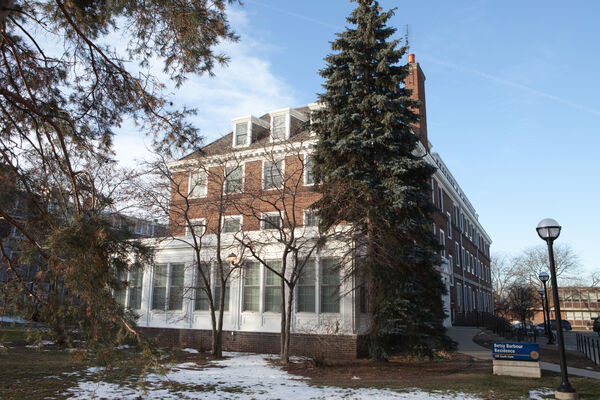

Who are we
The Maize and Blue Cupboard is a food pantry for the U-M community facing food insecurity. We connect you to immediate resources you require, such as food, household and personal products, as well as educational opportunities and support.
Make an appointment
You can make a shopping appointment for a time that suits your schedule. Appointments can be made up to two weeks in advance.
Make an appointment here.
What we offer
- Food: Produce, dairy products, meat, bread, and frozen and shelf-stable items (such as tuna, rice, and cans).
- Kitchen & Cooking: Pots and pans, Tupperware, cutting boards, knives, silverware, dishes, and other kitchenware.
- Personal & Household: Toilet paper, trash bags, cleaning goods, personal care items, school supplies, infant necessities, and more.
- Support: Connect with campus experts such as CAPS, SNAP (Michigan's food program), the Dean of Students and Financial Aid.
Where to find us
Location:

The Maize and Blue Cupboard is located at the basement of the Betsy Barbour Residence Hall. To protect residents' privacy, please only enter through the Maynard entrance.
If you require ramp or elevator access, kindly get in touch with us.
Address: 420 S State St Ann Arbor, MI 48109
Phone: 734-936-2794
Hours of Operation:
- Sunday: 2pm-6pm
- Monday - Thursday: 3pm-7pm
- Friday: 12pm-7pm
- Saturday: closed
FAQs
| Question | Answer |
|---|---|
| Who is eligible to use the food pantry? | Anyone with a valid U-M ID! |
| Will my financial aid be affected by this? | No, using Blue Cupboard and Maize will not affect your financial aid. |
| Is this confidential? | Our goal is to protect everyone's dignity, and privacy is at its core. Apart from requesting your U-M ID, no one is verifying the information you provide, and your information will not be shared. |
| What must I bring with me? | You will need your MCard at every appointment. |
| Can I walk in without an appointment? | No, we are unable to accept walk-in shopping. |